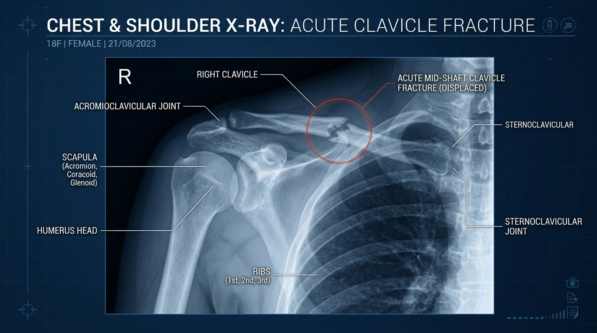

一般 X 光 01
鎖骨骨折（Clavicle Fracture）即時辨識與急診通報
⚠️ 陷阱情境與考驗意圖
臨床情境：車禍外傷或摔倒病患照胸部／肩部 X 光，影像一產出，鎖骨中段可見明顯移位性骨折（Displaced Mid-shaft Fracture）。
考官意圖：考驗學員在照完影像那一刻，有沒有即刻檢視影像發現急性骨折，還是只看對比度合格就讓病人自己走回急診等報告。
❌ 學員常見扣分盲點
- 盲點一：照完直接點選傳送 PACS，請病人自己走回急診候診區，完全沒有即時判讀骨折。
- 盲點二：看見骨折但心想「反正急診醫師會看片」，未給予患肢固定保護，導致病人活動造成骨折移位惡化或刺破鎖骨下血管。
✅ 標準破解解法 SOP
- 看台即時判讀：影像產出後立即在看台檢視鎖骨連續性，確認移位與骨折線，囑咐病人切勿隨意抬高或轉動患側上肢。
- 患肢固定保護：主動提供懸臂帶（Sling）或協助病人托住患肢，避免二次傷害。
- 主動電話 ISBAR 通報：立即致電急診醫師說明病況，完成交接。
💬 示範話術與通報檢核點
「急診醫師您好，我是 X 光室。剛剛拍攝的陳先生胸部 X 光，影像確認有右側鎖骨中段骨折移位。我們已先協助固定患側手肘並請病人平躺休息，請急診醫師接手評估處置。」

🔍 點擊放大檢視
【胸部與肩關節 X 光】
清晰顯示右側鎖骨中段完全骨折且骨折斷端有重疊移位（Acute Mid-shaft Clavicle Fracture）。
清晰顯示右側鎖骨中段完全骨折且骨折斷端有重疊移位（Acute Mid-shaft Clavicle Fracture）。